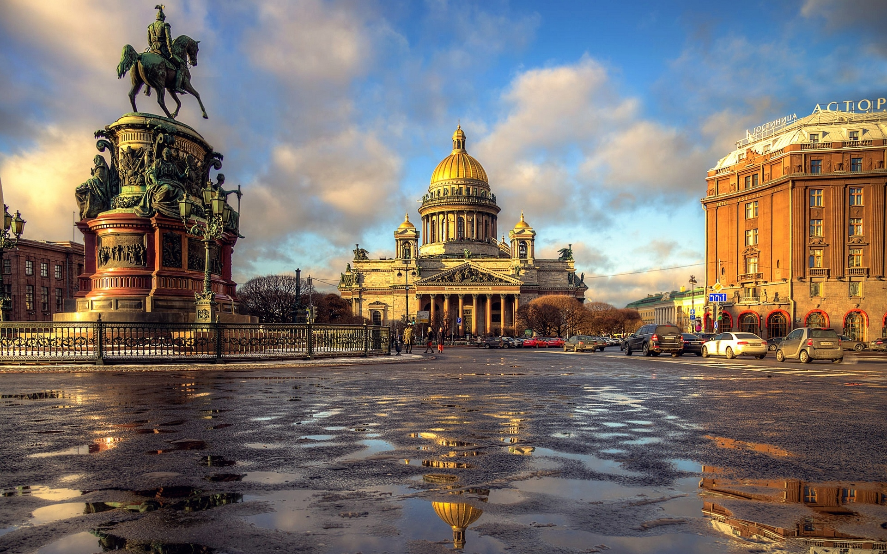
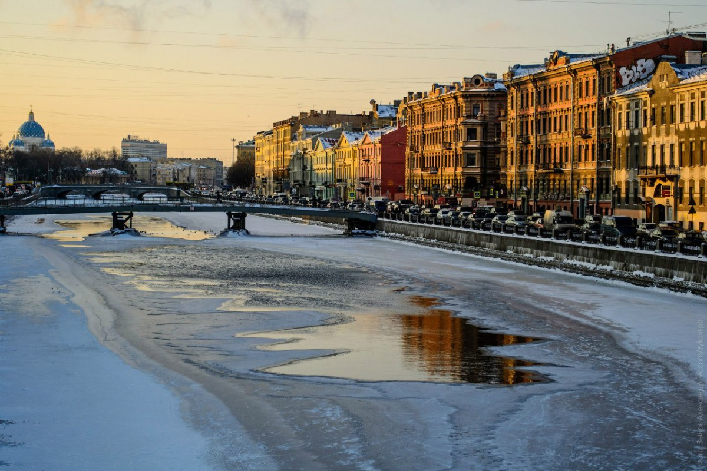
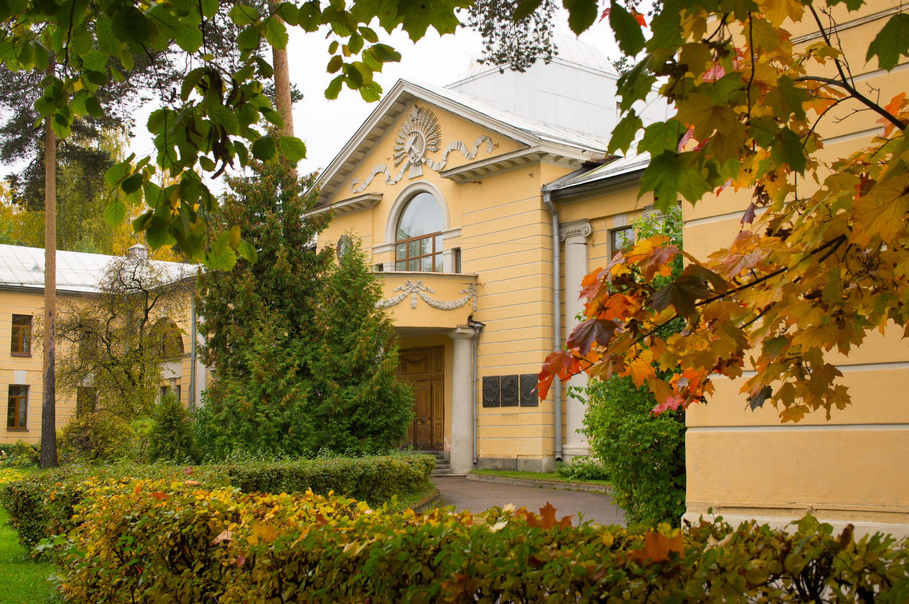

Место проведения конференции
Санкт-Петербург – один из самых красивых городов в мире. Он расположен на более чем 100 островах, в месте, где река Нева впадает в Финский залив. Город был основан 315 лет назад Петром Великим и до 1918 года являлся столицей Российской империи. В Санкт-Петербурге проживает 5.2 миллиона человек. Исторический центр города является объектом Всемирного наследия ЮНЕСКО.


Погода в конце октября в Санкт-Петербурге преимущественно облачная с температурой воздуха 2-10°C. В этом время года очень вероятны дожди, поэтому лучше взять с собой зонтик.
Конференция будет проходить в большом актовом зале ФТИ им. А.Ф. Иоффе. Здание ФТИ им. А.Ф. Иоффе находится в пяти минутах ходьбы от станции метро Политехническая (красная линия метро).

В дни прибытия и отъезда участников Конференции будет организован трансфер между аэропортом (железнодорожными вокзалами) и ФТИ им. А.Ф. Иоффе/гостиницей «Орбита».